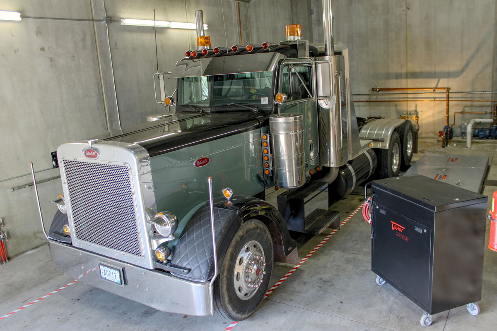
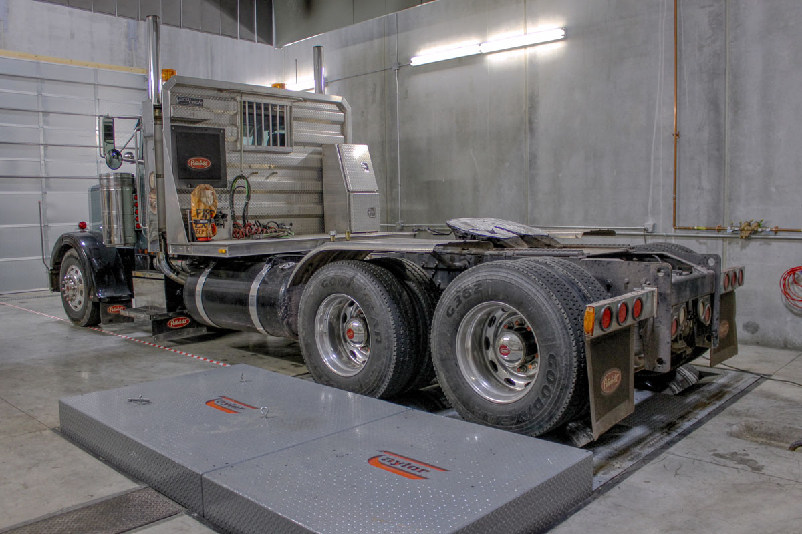
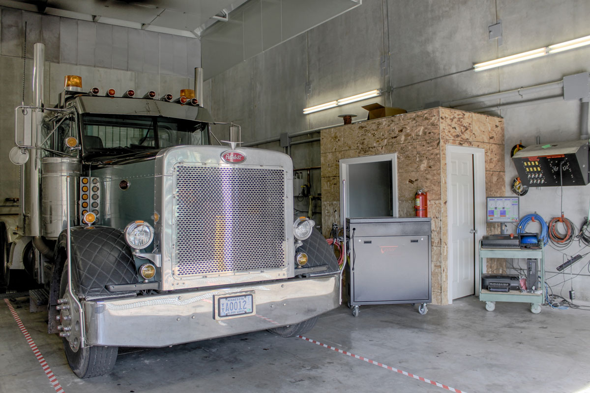
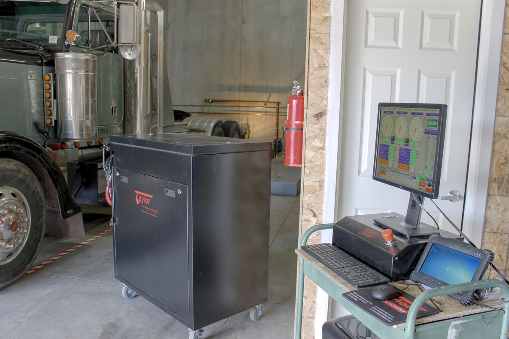

8284 West 35W Service Drive NE
Minneapolis, MN 55449
(763) 780-8533




Chassis Dyno
Our brand new state of the art Taylor Chassis Dynamometer will run a full system check of your engine. We can quickly diagnose service and performance issues as well as maximize your engines efficiency. Just some of the things we can do:
- Find Low Horsepower
- Check for Overheating
- Find Lost Fuel Economy
- Check Speedometer Precision
- Break-in Your Rebuilt Engine
Engine Dyno
Every engine we build is tested on our new Taylor Engine Dyno. Buy a used engine? Run it on our dyno first before you have it installed. Our engine dyno can:
- Test Oil Pressure
- Find Leaks
- Check Blow-By
- Break-in Your Rebuilt Engine